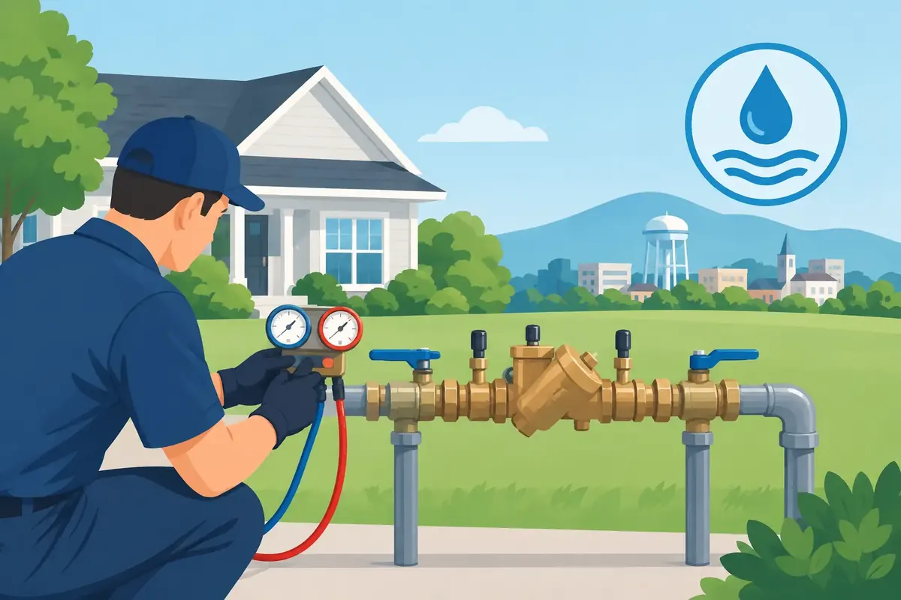

A backflow device usually does its job quietly, out of sight and out of mind. That is exactly why backflow testing Murfreesboro property owners schedule on time matters so much. When a device is working properly, it helps keep water from moving in the wrong direction and carrying contaminants toward the clean water supply your family, customers, employees, or tenants depend on.
For many properties, testing is not simply a good maintenance habit. It may be required by the local water authority, particularly where a property has irrigation, fire suppression, commercial equipment, a pool fill line, or another connection that could create a cross-connection risk. A failed test or missed deadline can lead to notices, reinspection costs, and unnecessary disruption. More importantly, it can leave a critical layer of drinking-water protection unchecked.
What Backflow Means for Your Property
Water is designed to flow one way: from the public supply into your building's plumbing system. Backflow occurs when a pressure change causes water to reverse direction. A sudden drop in supply pressure, sometimes called back-siphonage, can draw water from a private plumbing system back toward the public water line. Increased pressure on the property side, known as backpressure, can also force water backward.
That reversal is a concern because water inside a building or connected system may have been exposed to fertilizers, cleaning products, pool chemicals, bacteria, wastewater, or other contaminants. The risk varies from one property to another, but the purpose of a backflow prevention assembly remains the same: protect the potable water supply from contamination.
A device can be present and still need attention. Internal springs, seals, check valves, and relief components can wear, collect debris, freeze, corrode, or fail to hold pressure as intended. You cannot reliably tell whether the assembly is protecting your water by looking at it from across the yard or mechanical room. Certified testing uses calibrated equipment to verify how the device performs under the conditions it was built to handle.
When Is Backflow Testing Required in Murfreesboro?
The exact testing schedule depends on the type of connection, the device installed, and the requirements set by the water provider or governing authority. Many backflow assemblies require annual testing, and some property changes or repairs may trigger an additional test. A failed device generally needs to be repaired or replaced and retested before it can be considered compliant.
Residential customers often encounter backflow requirements after installing an irrigation system, adding certain water-treatment equipment, or connecting other systems that require protection. Commercial properties may have assemblies serving sprinkler systems, restaurants, medical offices, multifamily communities, manufacturing equipment, boilers, or other specialized uses.
Do not assume that every valve near your water meter is a testable backflow device. A plumber can identify the assembly, its purpose, and the appropriate next step. If you received a notice, keep it available when you call. The deadline, account details, device information, and reporting instructions can help the process move faster.
A Test Is More Than a Quick Inspection
A professional test is a functional evaluation, not a casual visual check. The technician first locates the assembly and inspects its condition, access, shutoff valves, fittings, and visible signs of damage or leakage. Using appropriate test equipment, the technician checks whether the internal components open, close, and maintain pressure within acceptable performance standards.
Afterward, the results must be documented correctly. Depending on the requirements for your connection, paperwork may need to be provided to you, submitted to the water authority, or both. Clear records matter. They show that the device was tested, identify any repairs completed, and make next year's maintenance easier to manage.
Testing itself is often straightforward when the device is accessible and in good condition. The situation becomes more involved if the assembly is buried, blocked by landscaping, damaged by freezing temperatures, installed in an unsafe location, or already leaking. In those cases, a repair or replacement may be the responsible choice before a passing test can be completed.
Signs Your Backflow Assembly May Need Attention
A notice from your water provider is the clearest reason to arrange service, but it should not be the only reason. Visible dripping from the relief valve, corrosion around the device, standing water in a valve box, damaged insulation, or a device that has been hit by equipment all deserve a closer look.
Property owners should also pay attention after a hard freeze. Exterior assemblies are especially vulnerable when temperatures fall below freezing and pipes or internal parts expand. Even if water service seems normal afterward, a freeze-damaged backflow preventer may no longer provide dependable protection.
For commercial property managers, backflow maintenance belongs on the same calendar as water heater service, drain maintenance, and other systems that affect daily operations. A missed deadline can become a last-minute problem for a restaurant, office, apartment community, or retail facility. Scheduling ahead gives you more time to address a failed component without rushing a repair decision.
What to Expect From Backflow Testing in Murfreesboro
Good service begins with respect for your time and property. Before a technician arrives, make sure the backflow assembly can be accessed safely. Clear away vehicles, outdoor furniture, storage items, and overgrown vegetation when possible. If the device is inside a locked mechanical room, behind a gate, or on a tenant-occupied property, arrange access in advance.
During the appointment, the water may need to be briefly shut off or the device operated as part of testing. Your technician should explain what is being done and let you know if the test identifies a concern. If repair or replacement is needed, ask for a clear explanation of the issue, the available options, and upfront pricing before work begins.
At Angle Stop Plumbing, that straightforward approach is part of treating every customer like family. Our team brings 31 years of plumbing experience to residential and commercial service throughout Middle Tennessee, with courteous professionals who respect your home, your business, and the people inside it. Our No Foul Language Guarantee matters when a technician is working around children, employees, customers, or tenants.
Repair or Replace? It Depends on the Device
Not every failed test means the entire assembly must be replaced. A worn check valve, damaged seal, weak spring, or debris inside the device may be repairable, depending on the assembly's make, age, condition, and availability of approved parts. Repair can be a sensible option when the body is sound and the device can be restored to reliable operation.
Replacement may be the better investment when the device is badly corroded, cracked, obsolete, repeatedly failing, or improperly installed. If an exterior device has frozen and split, replacement is often unavoidable. A qualified plumber can help you weigh the immediate repair cost against the reliability and warranty value of installing a new assembly.
For homeowners, it can also be wise to ask how the device should be protected going forward. Proper insulation, approved covers, improved drainage around the assembly, and seasonal winterization can help reduce preventable cold-weather damage. The right protection depends on the device location and local installation requirements, so a one-size-fits-all cover is not always enough.
Keep Your Records and Your Water Protection Current
Once testing is complete, save the report with your home or facility maintenance records. Mark the next due date on your calendar, especially if your water provider sends reminders by mail or email that may be missed during a busy season. Landlords and facility managers should also keep records available for maintenance staff and future property transitions.
Backflow prevention is one of those services that earns its value quietly. It helps protect a shared water supply, supports local compliance, and gives you confidence that a small but essential plumbing device has been checked by a trained professional. If you have received a testing notice, noticed damage, or simply want to get ahead of the next deadline, scheduling service now can keep a manageable task from turning into an urgent one.